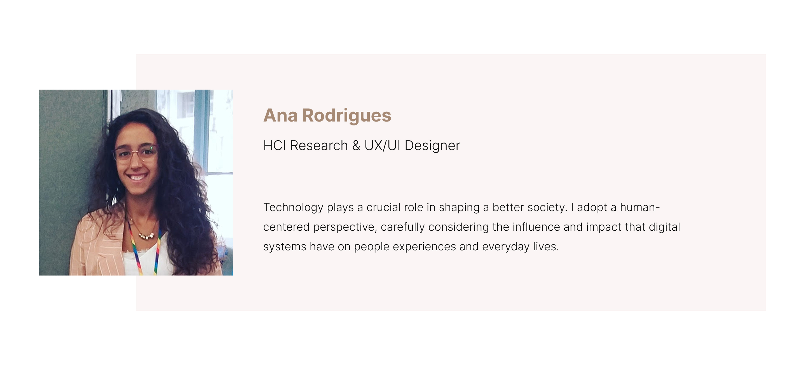
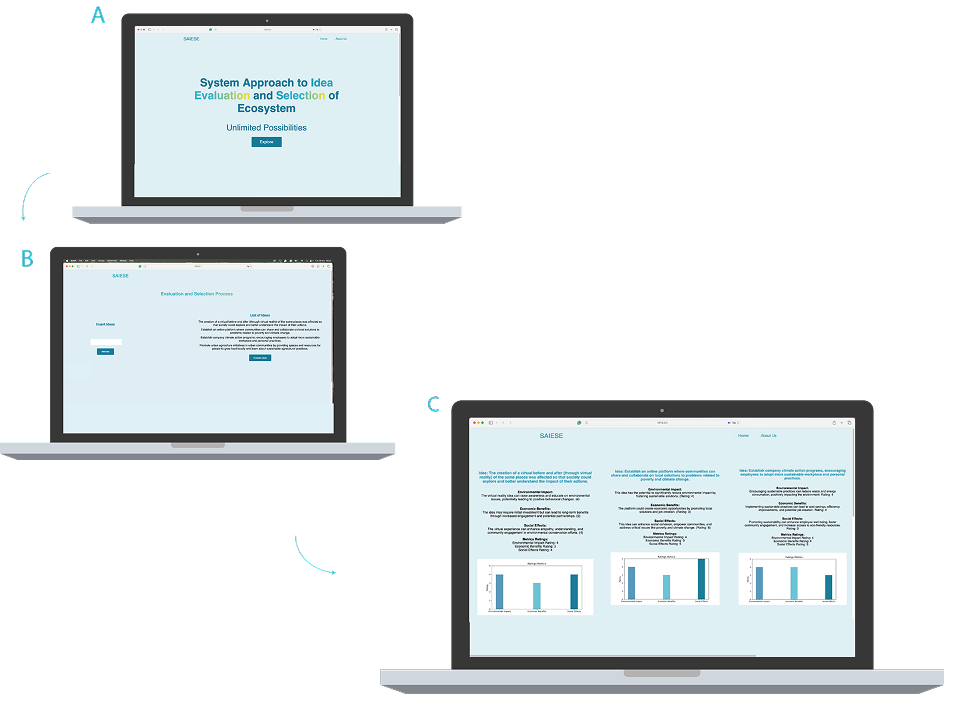
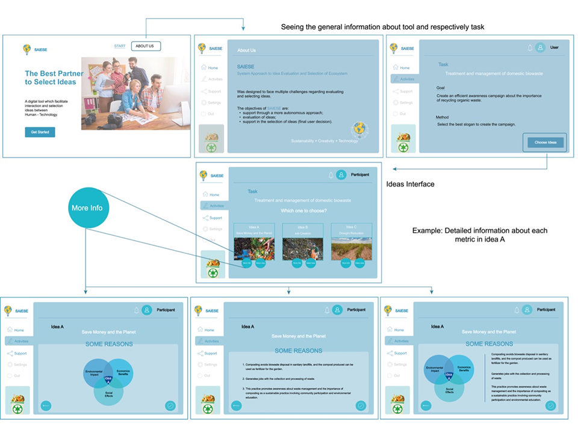
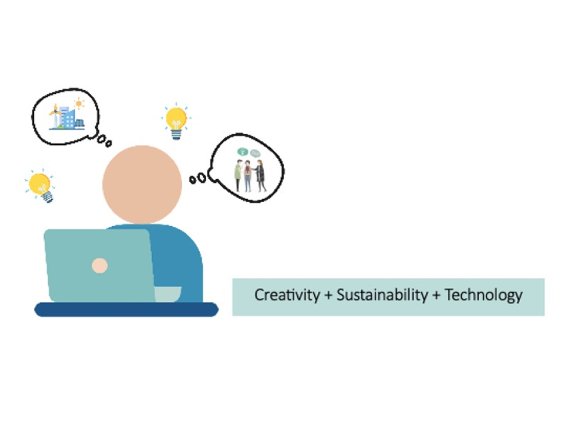
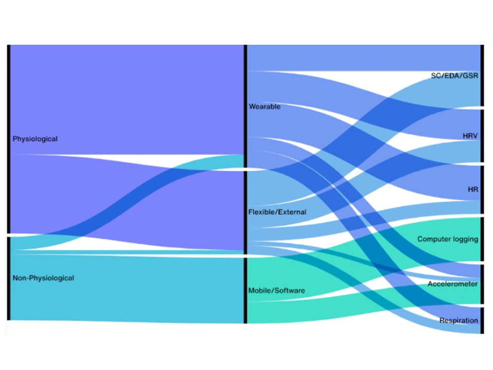

Research Focus
Creativity Support Tools
I investigate how interactive systems can support human creativity, informed by the Double Diamond model.
Human-AI Interaction
Studying how people interact with LLMs in the creative process and design space.
Human-AI Decision-Making
Designing AI systems that support reflective decision-making beyond trust.
Publications
Peer-reviewed research papers and contributions to the scientific community.

AlpCHI 2026
Creativity-oriented HCI: From Classic Approach to LLMs-based CSTs
Explores how LLMs reshape creativity support tools (CSTs) within HCI.

ECCE 2025
LLMs-Assisted Decision-making in Sustainable Contexts
SAIESE, LLM-based CST, which supports sustainable ideas’ generation, evaluation, and selection.

ECCE 2025
Inside the Solution Diamond: The Role of CSTs Supporting Divergent and Convergent Thinking
DCTF framework to analyze and guide the design of creativity support tools.

ICGI 2024
Fostering Informed Decision-Making: A Visual and Textual Approach to Sustainability Metrics for Idea Selection
Designs a UI approach to support sustainable decision-making through data and evaluation metrics.

C&C 2023
Creativity Support Tools and Convergent Thinking: A Preliminary Review on Idea Evaluation and Selection
Mapping CSTs and proposing guidelines to better support convergent thinking during the creative process.
Cited by Yale & Harvard, 2024

C&C 2023
Creativity Support Tool for Sustainability: An AI-first Approach to Accelerating the Idea Selection Process
Develops a CST to support sustainable idea generation in workplace contexts.

Int. J. Environ. Res. Public Health 2022
From Monitoring to Assisting: A Systematic Review towards Healthier Workplaces
Interactive systems for reducing workplace stress through embodied interaction.

C&C 2022
Exploring the creative process in a brainstorming session to develop a web-based system for idea selection
Web-based system to support idea selection after brainstorming sessions.

HCI International 2020
Increasing the museum visitors' engagement through compelling storytelling based on interactive explorations
StoryWall, a tangible interface to enhance museum visitor engagement.

UbiComp/ISWC Adjunct 2019
LightStress: targeting stress reduction through affective objects
LightStress, an adaptive artifact for stress reduction and wellbeing.
UX/UI Projects
Happymina
Anxiety support app focused on calming interactions and breathing exercises.
Check-In
Seamless guest check-in experience, reducing arrival friction through service mapping and mobile interaction.
Smart Hike
Context-aware hiking service providing real-time information to enhance safety and experience.
Social.in
Mobile app supporting social integration of international students through communication and shared activities.
Redesign Services
Cross-platform banking experience connecting desktop, mobile, and smartwatch for younger users.
ShelfMind
Smart home system providing real-time insights on food availability through sensors and contextual data.
Cornea Entertainment Studios
End-to-end design of a purpose-driven game combining physical and VR experiences for visually impaired accessibility.